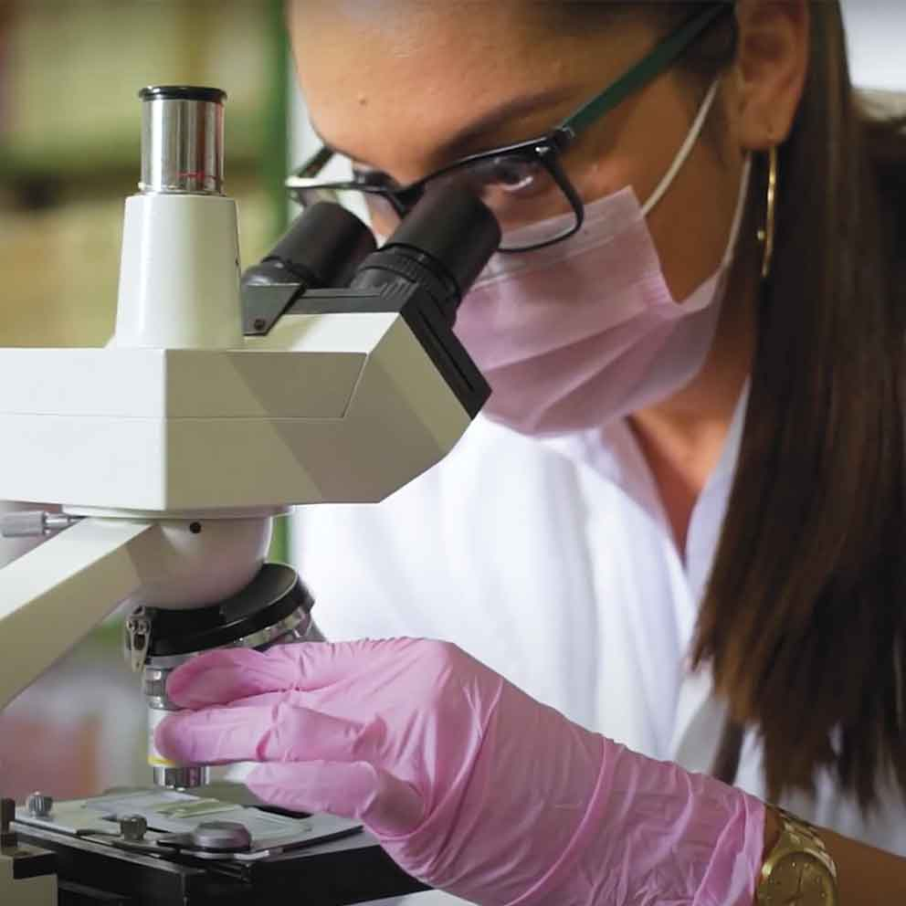

Nosotros
Proyecto familiar que creció hasta convertirse en una operación con más de cien colaboradores.

Nuestros pilares
- Calidad garantizada
- Buenas prácticas agrícolas
- Responsabilidad social y ambiental
Proyecto familiar que creció hasta convertirse en una operación con más de cien colaboradores.
